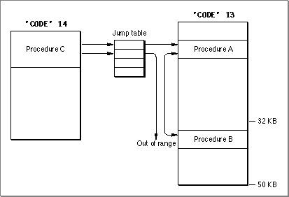

Increasing Segment Size
There are two methods for increasing segment size:
- You can use the
-bigsegcompiler option. This causes function calls within the same segment to be encoded with theBSR.Linstruction (available on 68020 or higher CPUs), which is a PC-relative instruction with a 32-bit offset. This solution is right for single-code segments like command extensions (type'XCMD') written in C. It does not work on 68000 machines.- You can use the
-br 68kor-br 020option of the ILink command. ILink then inserts small assembly-language modules called branch islands that transmit calls between two distant modules. The original call is modified to be aJSRinstruction to the branch island, and the latter contains instructions to branch to the desired target.Creating branch islands solves intrasegment reference problems, but is not a complete solution in the case where a routine located beyond the 32 KB limit is externally referenced. Figure 10-7 shows two segments, one of which is larger than 32 KB.
- Note
- If the program you are writing is intended to run on a 68020 or higher CPU, you can use the
-br 020option. This reduces code size and improves execution speed.Figure 10-7 Branch islands and intersegment references

As you can see, the only reference that cannot be resolved is that to procedure B if it is made through the jump table. The ILink tool automatically tries to place externally referenced routines in the first 32 KB of a segment, but if this is not possible, it generates a linker error. In such cases, you should resegment your code or build your program with the
-model far(32-bit everything) option.